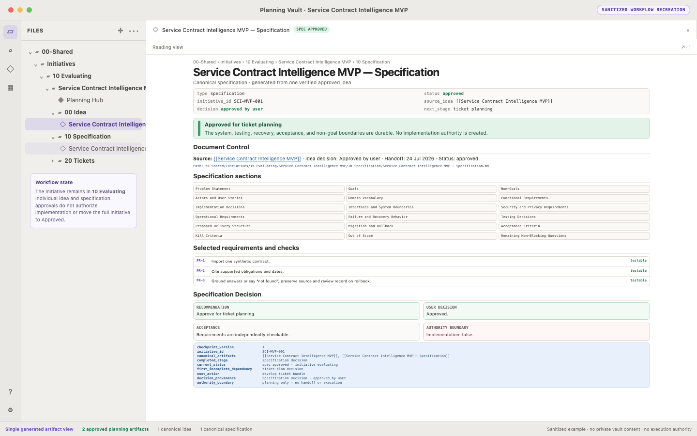

SoherAgent · 2 of 5 · Build the delivery plan
Proposed /plan concept · sanitized recreation
Scene 1 of 15 — Continue into specification planning
At the approved idea checkpoint, /plan automatically loads develop-obsidian-spec.
Internal skill step · no new user command
SoherAgentThe approved idea is durable. Proposed /plan is continuing into specification planning; no execution authority is created.
/planLoad develop-obsidian-spec internallyautomatic
checkpointApproved idea and provenanceverified
executionNo handoff, lease, or workernone
Scene 2 of 15 — Discover the approved idea
Find exactly one eligible approved idea before opening bounded context.
Automatic when unique · ask only if ambiguous
discoverEligible approved ideas1 found
matchService Contract Intelligence MVP · exact initiative identityunique
openBounded idea + initiative context onlyselected
authoritySelection does not authorize implementationnone
Scene 3 of 15 — Verify provenance
Verify identity, approval, and provenance before drafting.
Fail closed on ambiguous provenance
approvalIdea decision = approvedverified
identityInitiative and source IDs matchverified
provenanceBrief → initiative → approved ideaexact
authorityNo handoff, lease, or workernone
Scene 4 of 15 — Draft the specification
Draft testable behavior and recovery boundaries.
Proposed specification
Service Contract Intelligence MVP specification
P1Import one synthetic contract; cite supported obligations and dates; flag weak evidence as Needs reviewproduct
P2Grounded answers cite a passage or clearly say the answer was not foundproduct
H1A human records Confirmed or Needs review for each resultreview
T1Fixture-based extraction, citation, answer, and review-state teststest
R1Disable AI extraction cleanly; keep the source and review record intactrecovery
Scene 5 of 15 — Approve the specification
Make the required specification disposition.
Focused mandatory decision
Scene 6 of 15 — Save the specification
Save and verify the approved specification checkpoint.
Parent-owned sequential planning mutations
writeApproved specification checkpointsaved
link checkApproved idea → approved specificationverified
reopenSpecification status and provenanceverified
executionNo handoff or implementationfalse
Scene 7 of 15 — Open the generated specification in Obsidian
Immediately after specification approval and verification, the recording opens the canonical specification as a rendered Markdown note.
Sanitized Obsidian recreation · ticket planning not started

Scene 8 of 15 — Continue into ticket planning
After specification approval, /plan automatically loads develop-obsidian-tickets.
Internal skill step · no new user command
SoherAgentThe specification is approved and verified. Proposed /plan is continuing into ticket planning automatically.
/planLoad develop-obsidian-tickets internallyautomatic
checkpointApproved specification and provenanceverified
executionNo handoff or implementationfalse
Scene 9 of 15 — Discover the specification
Find exactly one eligible approved specification and verify its chain.
Automatic when unique · exact provenance
discoverEligible approved specifications1 found
matchService Contract Intelligence MVP · exact idea provenanceunique
verifyApproval, source links, non-goals, recoveryexact
authorityNo handoff or implementationnone
Scene 10 of 15 — Draft the ticket graph
Draft the dependency graph, frontier, and parent-owned gates.
V1-S2 waits for reviewed V1-S1 completion
Ticket graph
T01Cited contract extractionfrontier
T02Grounded summary + human reviewsame V1-S1 batch
S2Engineering adoption kitblocked
Integration · parent validates sequentially
Review · standards + specification passes
Handoff · not created by ticket planning
Execution · false
Scene 11 of 15 — Confirm graph and gates
Confirm ticket granularity and dependencies.
Focused mandatory decision
Scene 12 of 15 — Approve the ticket bundle
Make the required ticket-plan disposition.
Focused mandatory decision
Scene 13 of 15 — Choose the final route
Choose the final initiative route from the seven current options.
Focused mandatory final-route decision
Scene 14 of 15 — Write route and links
Write the route and links in strict sequence.
Parent-owned approval-gated Obsidian writes
write 1Approved ticket bundlesaved
link 1Specification → ticket bundleverified
write 2Final route: approved standalone worksaved
link 2Initiative → final routeverified
Scene 15 of 15 — Complete autonomous planning
Proposed /plan has orchestrated idea, specification, and ticket planning to a durable stop.
No automatic handoff or execution
SoherAgentProposed /plan complete. Initiative, approved idea, approved specification, reviewed ticket bundle, standalone route, and graph are durable.
User commands so far · /plan on
Next user command · /yolo on
Eligible batch · V1-S1 only
Implementation · false
›